What are the different ways to measure the center of a distribution, and why is there more than one way to measure the center? How do you know if a value is “far” from the center? What does it mean to an outlier? We will continue with the email50 data set and investigate multiple quantitative summarizes for numerical data.
Subsection2.2.1
Objectives:Learning objectives
Calculate, interpret, and compare the two measures of center (mean and median) and the three measures of spread (standard deviation, interquartile range, and range).
Understand how the shape of a distribution affects the relationship between the mean and the median.
Identify and apply the two rules of thumb for identify outliers (one involving standard deviation and mean and the other involving \(Q_1\) and \(Q_3\)).
Describe the distribution a numerical variable with respect to center, spread, and shape, noting the presence of outliers.
Find the 5 number summary and IQR, and draw a box plot with outliers shown.
Understand the effect changing units has on each of the summary quantities.
Use the empirical rule to summarize approximately normal distributions.
Use quartiles, percentiles, and Z-scores to measure the relative position of a data point within the data set.
Compare the distribution of a numerical variable using dot plots / histograms with the same scale, back-to-back stem-and-leaf plots, or parallel box plots. Compare the distributions with respect to center, spread, shape, and outliers.
Subsection2.2.2Measures of center
In the previous section, we saw that modes can occur anywhere in a data set. Therefore, mode is not a measure of center. We understand the term center intuitively, but quantifying what is the center can be a little more challenging. This is because there are different definitions of center. Here we will focus on the two most common: the mean and median.
The mean, sometimes called the average, is a common way to measure the center of a distribution of data. To find the mean number of characters in the 50 emails, we add up all the character counts and divide by the number of emails. For computational convenience, the number of characters is listed in the thousands and rounded to the first decimal.
The sample mean is often labeled \(\bar{x}\text{.}\) The letter \(x\) is being used as a generic placeholder for the variable of interest, num_char, and the bar on the \(x\) communicates that the average number of characters in the 50 emails was 11,600.
Mean.
The sample mean of a numerical variable is computed as the sum of all of the observations divided by the number of observations:
where \(\sum\) is the capital Greek letter sigma and \(\sum{x_{i}}\) means take the sum of all the individual \(x\) values. \(x_1, x_2, \dots, x_n\) represent the \(n\) observed values.
Checkpoint2.2.1.
Examine (2.2.1) and (2.2.2) above. What does \(x_1\) correspond to? And \(x_2\text{?}\) What does \(x_i\) represent? 1
\(x_{1}\) corresponds to the number of characters in the first email in the sample (21.7, in thousands), \(x_{2}\) to the number of characters in the second email (7.0, in thousands), and \(x_{i}\) corresponds to the number of characters in the \(i^{\text{th}}\) email in the data set.
Checkpoint2.2.2.
What was \(n\) in this sample of emails? 2
The sample size was \(n=50\text{.}\)
The email50 data set represents a sample from a larger population of emails that were received in January and March. We could compute a mean for this population in the same way as the sample mean, however, the population mean has a special label: \(\mu\text{.}\) The symbol \(\mu\) is the Greek letter mu and represents the average of all observations in the population. Sometimes a subscript, such as \(_x\text{,}\) is used to represent which variable the population mean refers to, e.g. \(\mu_x\text{.}\)
Example2.2.3.
The average number of characters across all emails can be estimated using the sample data. Based on the sample of 50 emails, what would be a reasonable estimate of \(\mu_x\text{,}\) the mean number of characters in all emails in the email data set? (Recall that email50 is a sample from email.)
Solution.
The sample mean, 11,600, may provide a reasonable estimate of \(\mu_x\text{.}\) While this number will not be perfect, it provides a point estimate of the population mean. In [cross-reference to target(s) "foundationsForInference" missing or not unique] and beyond, we will develop tools to characterize the reliability of point estimates, and we will find that point estimates based on larger samples tend to be more reliable than those based on smaller samples.
Example2.2.4.
We might like to compute the average income per person in the US. To do so, we might first think to take the mean of the per capita incomes across the 3,142 counties in the county data set. What would be a better approach?
Solution.
The county data set is special in that each county actually represents many individual people. If we were to simply average across the income variable, we would be treating counties with 5,000 and 5,000,000 residents equally in the calculations. Instead, we should compute the total income for each county, add up all the counties’ totals, and then divide by the number of people in all the counties. If we completed these steps with the county data, we would find that the per capita income for the US is $27,348.43. Had we computed the simple mean of per capita income across counties, the result would have been just $22,504.70!
Example 2.2.4 used what is called a weighted mean, which will not be a key topic in this textbook. However, we have provided an online supplement on weighted means for interested readers:
The median provides another measure of center. The median splits an ordered data set in half. There are 50 character counts in the email50 data set (an even number) so the data are perfectly split into two groups of 25. We take the median in this case to be the average of the two middle observations: \((6,768+7,012)/2=6,890\text{.}\) When there are an odd number of observations, there will be exactly one observation that splits the data into two halves, and in this case that observation is the median (no average needed).
Median: the number in the middle.
In an ordered data set, the median is the observation right in the middle. If there are an even number of observations, the median is the average of the two middle values.
Graphically, we can think of the mean as the balancing point. The median is the value such that 50% of the area is to the left of it and 50% of the area is to the right of it.
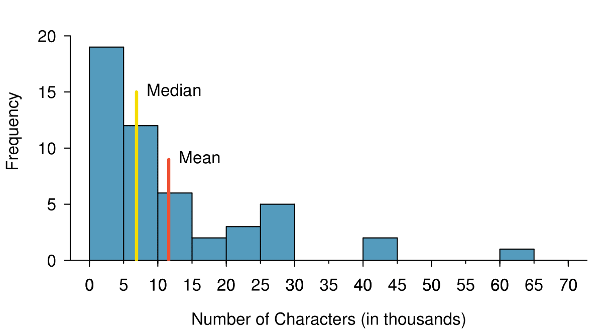
Figure2.2.5.A histogram of num_char with its mean and median shown.
Example2.2.6.
Based on the data, why is the mean greater than the median in this data set?
Solution.
Consider the three largest values of 42 thousand, 43 thousand, and 64 thousand. These values drag up the mean because they substantially increase the sum (the total). However, they do not drag up the median because their magnitude does not change the location of the middle value.
The mean follows the tail.
In a right skewed distribution, the mean is greater than the median.
In a left skewed distribution, the mean is less than the median.
In a symmetric distribution, the mean and median are approximately equal.
Checkpoint2.2.7.
Consider the distribution of individual income in the United States. Which is greater: the mean or median? Why? 4
Because a small percent of individuals earn extremely large amounts of money while the majority earn a modest amount, the distribution is skewed to the right. Therefore, the mean is greater than the median.
Subsection2.2.3Standard deviation as a measure of spread
The U.S. Census Bureau reported that in 2017, the median family income was $73,891 and the mean family income was $99,114. 5
Is a family income of $60,000 far from the mean or somewhat close to the mean? In order to answer this question, it is not enough to know the center of the data set and its range (maximum value - minimum value). We must know about the variability of the data set within that range. Low variability or small spread means that the values tend to be more clustered together. High variability or large spread means that the values tend to be far apart.
Example2.2.8.
Is it possible for two data sets to have the same range but different spread? If so, give an example. If not, explain why not.
Solution.
Yes. An example is: 1, 1, 1, 1, 1, 9, 9, 9, 9, 9 and 1, 5, 5, 5, 5, 5, 5, 5, 5, 5, 9.
The first data set has a larger spread because values tend to be farther away from each other while in the second data set values are clustered together at the mean.
Here, we introduce the standard deviation as a measure of spread. Though its formula is a bit tedious to calculate by hand, the standard deviation is very useful in data analysis and roughly describes how far away, on average, the observations are from the mean.
We call the distance of an observation from its mean its deviation. Below are the deviations for the \(1^{st}_{}\text{,}\)\(2^{nd}_{}\text{,}\)\(3^{rd}\text{,}\) and \(50^{th}_{}\) observations in the num_char variable. For computational convenience, the number of characters is listed in the thousands and rounded to the first decimal.
We divide by \(n-1\text{,}\) rather than dividing by \(n\text{,}\) when computing the variance; you need not worry about this mathematical nuance for the material in this textbook. Notice that squaring the deviations does two things. First, it makes large values much larger, seen by comparing \(10.1^2\text{,}\)\((-4.6)^2\text{,}\)\((-11.0)^2\text{,}\) and \(4.2^2\text{.}\) Second, it gets rid of any negative signs.
The standard deviation is defined as the square root of the variance:
The standard deviation of the number of characters in an email is about 13.13 thousand. A subscript of \(_x\) may be added to the variance and standard deviation, i.e. \(s_x^2\) and \(s_x^{}\text{,}\) as a reminder that these are the variance and standard deviation of the observations represented by \(x_1^{}\text{,}\)\(x_2^{}\text{,}\) ..., \(x_n^{}\text{.}\) The \(_{x}\) subscript is usually omitted when it is clear which data the variance or standard deviation is referencing.
Calculating the standard deviation.
The standard deviation is the square root of the variance. It is roughly the “typical” distance of the observations from the mean.
The variance is useful for mathematical reasons, but the standard deviation is easier to interpret because it has the same units as the data set. The units for variance will be the units squared (e.g. meters\(^2\)). Formulas and methods used to compute the variance and standard deviation for a population are similar to those used for a sample. 6
The only difference is that the population variance has a division by \(n\) instead of \(n-1\text{.}\)
However, like the mean, the population values have special symbols: \(\sigma_{}^2\) for the variance and \(\sigma\) for the standard deviation. The symbol \(\sigma\) is the Greek letter sigma.
Thinking about the standard deviation.
It is useful to think of the standard deviation as the “typical” or “average” distance that observations fall from the mean.
In Chapter 4, we encounter a bell-shaped distribution known as the normal distribution. The empirical rule tells us that for normal distributions, about 68% of the data will be within one standard deviation of the mean, about 95% will be within two standard deviations of the mean, and about 99.7% will be within three standard deviations of the mean. However, as seen in Figure 2.2.9 and Figure 2.2.10, these percentages generally do not hold if the distribution is not bell-shaped.
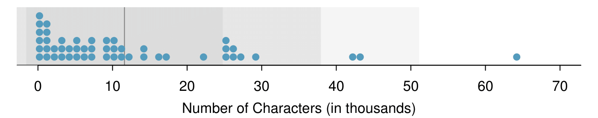
Figure2.2.9.In the num_char data, 40 of the 50 emails (80%) are within 1 standard deviation of the mean, and 47 of the 50 emails (94%) are within 2 standard deviations. The empirical rule does not hold well for skewed data, as shown in this example.
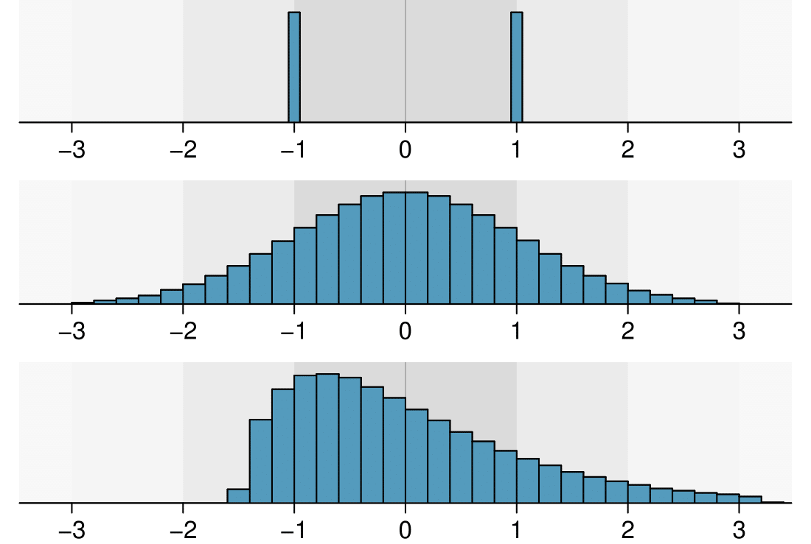
Figure2.2.10.Three very different population distributions with the same mean \(\mu=0\) and standard deviation \(\sigma=1\text{.}\)
Checkpoint2.2.11.
With Subsection 2.1.4, the concept of shape of a distribution was introduced. A good description of the shape of a distribution should include modality and whether the distribution is symmetric or skewed to one side. Using Figure 2.2.10 as an example, explain why such a description is important. 7
Figure 2.2.10 shows three distributions that look quite different, but all have the same mean, variance, and standard deviation. Using modality, we can distinguish between the first plot (bimodal) and the last two (unimodal). Using skewness, we can distinguish between the last plot (right skewed) and the first two. While a picture, like a histogram, tells a more complete story, we can use modality and shape (symmetry/skew) to characterize basic information about a distribution.
Example2.2.12.
Earlier we reported that the mean family income in the U.S. in 2017 was $99,114. Estimating the standard deviation of income as approximately $50,000, is a family income of $60,000 far from the mean or relatively close to the mean?
Solution.
Because $60,000 is less that one standard deviation from the mean, it is relatively close to the mean. If the value were more than 2 standard deviations away from the mean, we would consider it far from the mean.
When describing any distribution, comment on the three important characteristics of center, spread, and shape. Also note any especially unusual cases.
Example2.2.13.
In the data’s context (the number of characters in emails), describe the distribution of the num_char variable shown in the histogram below.
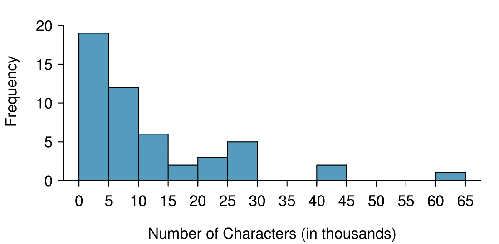
Solution.
The distribution of email character counts is unimodal and very strongly skewed to the right. Many of the counts fall near the mean at 11,600, and most fall within one standard deviation (13,130) of the mean. There is one exceptionally long email with about 65,000 characters.
In this chapter we use standard deviation as a descriptive statistic to describe the variability in a given data set. In [cross-reference to target(s) "foundationsForInference" missing or not unique] we will use the standard deviation to assess how close a sample mean is to the population mean.
Subsection2.2.4Z-scores
Knowing how many standard deviations a value is from the mean is often more useful than simply knowing how far a value is from the mean.
Example2.2.14.
Consider that the mean family income in the U.S. in 2017 was $99,114. Let’s round this to $100,000 and estimate the standard deviation of income as $50,000. Using these estimates, how many standard deviations above the mean is an income of $200,000?
Solution.
The value $200,000 is $100,000 above the mean. $100,000 is 2 standard deviations above the mean. This can be found by doing
The number of standard deviations a value is above or below the mean is known as the Z-score. A Z-score has no units, and therefore is sometimes also called standard units.
The Z-score.
The Z-score of an observation is the number of standard deviations it falls above or below the mean. We compute the Z-score for an observation \(x\) that follows a distribution with mean \(\mu\) and standard deviation \(\sigma\) using
\begin{gather*}
Z = \frac{x - \mu}{\sigma}
\end{gather*}
Observations above the mean always have positive Z-scores, while those below the mean always have negative Z-scores. If an observation is equal to the mean, then the Z-score is \(0\text{.}\)
Example2.2.15.
Head lengths of brushtail possums have a mean of 92.6 mm and standard deviation 3.6 mm. Compute the Z-scores for possums with head lengths of 95.4 mm and 85.8 mm.
We can use Z-scores to roughly identify which observations are more unusual than others. An observation \(x_1\) is said to be more unusual than another observation \(x_2\) if the absolute value of its Z-score is larger than the absolute value of the other observation’s Z-score: \(|Z_1| > |Z_2|\text{.}\) This technique is especially insightful when a distribution is symmetric.
Because the absolute value of \(Z\)-score for the second observation (\(x_{2} = 85.8\)mm \(\rightarrow Z_{2}=1.89\)) is larger than that of the first (\(x_{1} = 95.4\) mm \(\rightarrow Z_{1} = 0.78\)), the second observation has a more unusual head length.
Checkpoint2.2.17.
Let \(X\) represent a random variable from a distribution with \(\mu=3\) and \(\sigma=2\text{,}\) and suppose we observe \(x=5.19\text{.}\)
Find the Z-score of \(x\text{.}\)
Interpret the Z-score. 9
(a) Its \(Z\)-score is given by \(Z = \frac{x-\mu}{\sigma} = \frac{5.19-3}{2} =\frac{2.19}{2} = 1.095\text{.}\) (b) The observation \(x\) is 1.095 standard deviations above the mean. We know it must be above the mean since \(Z\) is positive.
Because Z-scores have no units, they are useful for comparing distance to the mean for distributions that have different standard deviations or different units.
Example2.2.18.
The average daily high temperature in June in LA is 77°F with a standard deviation of 5°F. The average daily high temperature in June in Iceland is 13°C with a standard deviation of 3°C. Which would be considered more unusual: an 83°F day in June in LA or a 19°C day in June in Iceland?
Solution.
Both values are 6° above the mean. However, they are not the same number of standard deviations above the mean. 83 is \((83-77)/5 = 1.2\) standard deviations above the mean, while 19 is \((19-13)/3 = 2\) standard deviations above the mean. Therefore, a 19°C day in June in Iceland would be more unusual than an 83°F day in June in LA.
Subsection2.2.5Box plots and quartiles
A box plot summarizes a data set using five summary statistics while also plotting unusual observations, called outliers. Figure 2.2.19 provides a box plot of the num_char variable from the email50 data set.
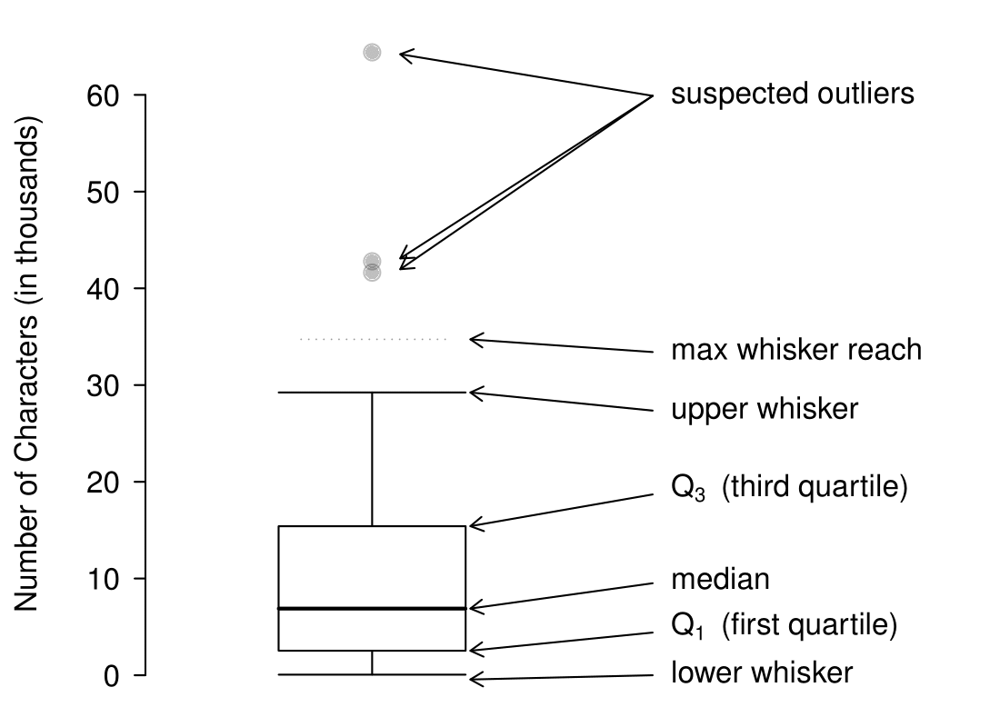
Figure2.2.19.A labeled box plot for the number of characters in 50 emails. The median (6,890) splits the data into the bottom 50% and the top 50%. Explore dozens of boxplots with histograms using American Community Survey data on Tableau Public 10
The five summary statistics used in a box plot are known as the five-number summary, which consists of the minimum, the maximum, and the three quartiles (\(Q_1\text{,}\)\(Q_2\text{,}\)\(Q_3\)) of the data set being studied.
\(Q_2\) represents the second quartile, which is equivalent to the 50th percentile (i.e. the median). Previously, we saw that Q\(_2\) (the median) for the email50 data set was the average of the two middle values: \(\frac{6,768+7,012}{2} = 6,890\text{.}\)
\(Q_1\) represents the first quartile, which is the 25th percentile, and is the median of the smaller half of the data set. There are 25 values in the lower half of the data set, so \(Q_1\) is the middle value: 2,454 characters. \(Q_3\) represents the third quartile, or 75th percentile, and is the median of the larger half of the data set: 15,829 characters.
We calculate the variability in the data using the range of the middle 50% of the data: \(Q_3 - Q_1 = 13,375\text{.}\) This quantity is called the interquartile range (IQR, for short). It, like the standard deviation, is a measure of variability or spread in data. The more variable the data, the larger the standard deviation and IQR tend to be.
Interquartile range (IQR).
The IQR is the length of the box in a box plot. It is computed as
where \(Q_1\) and \(Q_3\) are the \(25^{th}\) and \(75^{th}\) percentiles.
Outliers in the context of a box plot.
When in the context of a box plot, define an outlier as an observation that is more than \(1.5 \times IQR\) above \(Q_3\) or \(1.5 \times IQR\) below \(Q_1\text{.}\) Such points are marked using a dot or asterisk in a box plot.
To build a box plot, draw an axis (vertical or horizontal) and draw a scale. Draw a dark line denoting \(Q_2\text{,}\) the median. Next, draw a line at \(Q_1\) and at \(Q_3\text{.}\) Connect the \(Q_1\) and \(Q_3\) lines to form a rectangle. The width of the rectangle corresponds to the IQR and the middle 50% of the data is in this interval.
Extending out from the rectangle, the whiskers attempt to capture all of the data remaining outside of the box, except outliers. In Figure 2.2.19, the upper whisker does not extend to the last three points, which are beyond \(Q_3 + 1.5\times IQR\) and are outliers, so it extends only to the last point below this limit. 11
You might wonder, isn’t the choice of \(1.5 \times IQR\) for defining an outlier arbitrary? It is! In practical data analyses, we tend to avoid a strict definition since what is an unusual observation is highly dependent on the context of the data.
The lower whisker stops at the lowest value, 33, since there are no additional data to reach. Outliers are each marked with a dot or asterisk. In a sense, the box is like the body of the box plot and the whiskers are like its arms trying to reach the rest of the data.
Example2.2.20.
Compare the box plot to the graphs previously discussed: stem-and-leaf plot, dot plot, frequency and relative frequency histogram. What can we learn more easily from a box plot? What can we learn more easily from the other graphs?
Solution.
It is easier to immediately identify the quartiles from a box plot. The box plot also more prominently highlights outliers. However, a box plot, unlike the other graphs, does not show the distribution of the data. For example, we cannot generally identify modes using a box plot.
Example2.2.21.
Is it possible to identify skew from the box plot?
Solution.
Yes. Looking at the lower and upper whiskers of this box plot, we see that the lower 25% of the data is squished into a shorter distance than the upper 25% of the data, implying that there is greater density in the low values and a tail trailing to the upper values. This box plot is right skewed.
Checkpoint2.2.22.
True or false: there is more data between the median and \(Q_3\) than between \(Q_1\) and the median. 12
False. Since \(Q_1\) is the 25th percentile and the median is the 50th percentile, 25% of the data fall between \(Q_1\) and the median. Similarly, 25% of the data fall between \(Q_2\) and the median. The distance between the median and \(Q_3\) is larger because that 25% of the data is more spread out.
Example2.2.23.
Consider the following ordered data set.
5
5
9
10
15
16
20
30
80
Find the 5 number summary and identify how small or large a value would need to be to be considered an outlier. Are there any outliers in this data set?
Solution.
There are nine numbers in this data set. Because \(n\) is odd, the median is the middle number: 15. When finding \(Q_1\text{,}\) we find the median of the lower half of the data, which in this case includes 4 numbers (we do not include the 15 as belonging to either half of the data set). \(Q_1\) then is the average of 5 and 9, which is \(Q_1 = 7\text{,}\) and \(Q_3\) is the average of 20 and 30, so \(Q_3 = 25\text{.}\) The min is 5 and the max is 80. To see how small a number needs to be to be an outlier on the low end we do:
There are no numbers less than -35, so there are no outliers on the low end. The observation at 80 is greater than 77, so 80 is an outlier on the high end.
One can use a handheld calculator or online software such as Desmos to calculate summary statistics. More advanced statistical software packages include R (in which most of the graphs in this text were made), Python, SAS, and STATA.
(openintro.org/ahss/desmos) to graph and find summary statistics for a single variable in Desmos, as shown in the figure.
TI-83/84: Entering data.
The first step in summarizing data or making a graph is to enter the data set into a list. Use STAT, Edit.
Press STAT.
Choose 1:Edit.
Enter data into L1 or another list.
Casio fx-9750GII: Entering data.
Navigate to STAT (MENU button, then hit the 2 button or select STAT).
Optional: use the left or right arrows to select a particular list.
Enter each numerical value and hit EXE.
TI-84: Calculating Summary Statistics.
Use the STAT, CALC, 1-Var Stats command to find summary statistics such as mean, standard deviation, and quartiles.
Enter the data as described previously.
Press STAT.
Right arrow to CALC.
Choose 1:1-Var Stats.
Enter L1 (i.e. 2ND1) for List. If the data is in a list other than L1, type the name of that list.
Leave FreqList blank.
Choose Calculate and hit ENTER.
TI-83: Do steps 1-4, then type L1 (i.e. 2nd1) or the list’s name and hit ENTER.
Calculating the summary statistics will return the following information. It will be necessary to hit the down arrow to see all of the summary statistics.
\(\bar{x}\)
Mean
n
Sample size or # of data points
\(\Sigma x\)
Sum of all the data values
minX
Minimum
\(\Sigma x^2\)
Sum of all the squared data values
\(Q_{1}\)
First quartile
\(S_{x}\)
Sample standard deviation
Med
Median
\(\sigma x\)
Population standard deviation
maxX
Maximum
TI-83/84: Drawing a box plot.
Enter the data to be graphed as described previously.
Hit 2NDY= (i.e. STAT PLOT).
Hit ENTER (to choose the first plot).
Hit ENTER to choose ON.
Down arrow and then right arrow three times to select box plot with outliers.
Down arrow again and make Xlist:L1 and Freq:1.
Choose ZOOM and then 9:ZoomStat to get a good viewing window.
Casio fx-9750GII: Drawing a box plot and 1-variable statistics.
Navigate to STAT (MENU, then hit 2) and enter the data into a list.
Go to GRPH (F1).
Next go to SET (F6) to set the graphing parameters.
To use the 2nd or 3rd graph instead of GPH1, select F2 or F3.
Move down to Graph Type and select the \(\triangleright\) (F6) option to see more graphing options, then select Box (F2).
If XList does not show the list where you entered the data, hit LIST (F1) and enter the correct list number.
Leave Frequency at 1.
For Outliers, choose On (F1).
Hit EXE and then choose the graph where you set the parameters F1 (most common), F2, or F3.
If desired, explore 1-variable statistics by selecting 1-Var (F1).
Example2.2.25.
Enter the following 10 data points into a calculator or into this 1-Var Stats calculator 14
Find the summary statistics and make a box plot of the data.
Solution.
The summary statistics should be \(\bar{x} = 9.1\text{,}\)\(S_{x} = 7.48\text{,}\)\(Q_{1} = 3\text{,}\) etc. The box plot should be as follows.
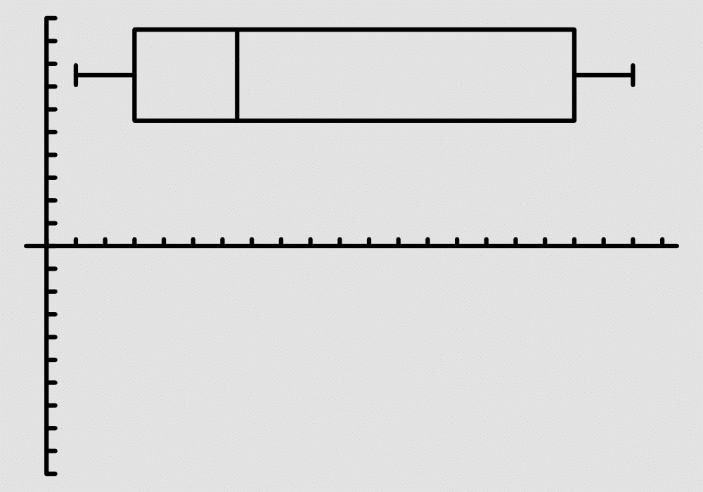
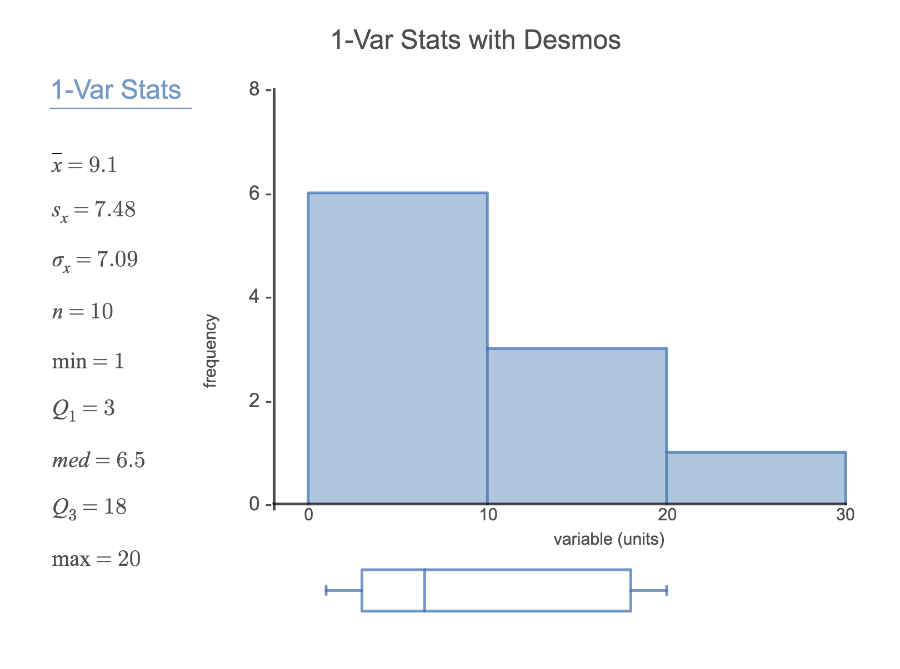
TI-83/84: What to do if you cannot find L1 or another list Restore lists L1-L6 using the following steps:.
Press STAT.
Choose 5:SetUpEditor.
Hit ENTER.
Casio fx-9750GII: Deleting a data list.
Navigate to STAT (MENU, then hit 2).
Use the arrow buttons to navigate to the list you would like to delete.
Select \(\triangleright\) (F6) to see more options.
Select DEL-A (F4) and then F1 to confirm.
Subsection2.2.7Outliers and robust statistics
Rules of thumb for identifying outliers.
There are two rules of thumb for identifying outliers:
More than 1.5× IQR below \(Q_1\) or above \(Q_3\)
More than 2 standard deviations above or below the mean.
Both are important for the AP exam. In practice, consider these to be only rough guidelines.
Checkpoint2.2.26.
For the email50 data set,\(Q_1=\) 2,536 and \(Q_3=15,411\text{.}\)\(\bar{x}\) = 11,600 and \(s\) = 13,130. What values would be considered an outlier on the low end using each rule? 15
\(Q_1-1.5 \times (15411-2536)=-16,749.5\) so values less than \(-16,749.5\) would be considered an outlier using the first rule of thumb. Using the second rule of thumb, a value less than \(\bar{x}-2 \times s=11,600-2 \times 13,130=-14,660\) would be considered an outlier. Note tht these are just rules of thumb and yield different values.
Checkpoint2.2.27.
Because there are no negative values in this data set, there can be no outliers on the low end. What does the fact that there are outliers on the high end but not on the low end suggestion? 16
It suggests that the distribution has a right hand tail, that is, that it is right skewed.
How are the sample statistics of the num_char data set affected by the observation, 64,401? What would have happened if this email wasn’t observed? What would happen to these summary statistics if the observation at 64,401 had been even larger, say 150,000? These scenarios are plotted alongside the original data in Figure 2.2.28, and sample statistics are computed under each scenario in Table 2.2.29.
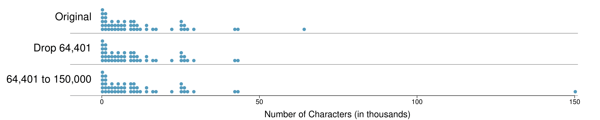
Figure2.2.28.Dot plots of the original character count data and two modified data sets.
Table2.2.29.A comparison of how the median, IQR, mean (\(\bar{x}\)), and standard deviation (\(s\)) change when extreme observations are present.
robust
not robust
scenario
median
IQR
\(\bar{x}\)
\(s\)
original num_char data
6,890
12,875
11,600
13,130
drop 64,401 observation
6,768
11,702
10,521
10,798
move 64,401 to 150,000
6,890
12,875
13,310
22,434
Checkpoint2.2.30.
Which is more affected by extreme observations, the mean or median? Table 2.2.29 may be helpful. (b) Is the standard deviation or IQR more affected by extreme observations? 17
(a) Mean is affected more. (b) Standard deviation is affected more. Complete explanations are provided in the material following Checkpoint 2.2.30.
The median and IQR are called robust estimates because extreme observations have little effect on their values. The mean and standard deviation are much more affected by changes in extreme observations.
Example2.2.31.
The median and IQR do not change much under the three scenarios in Table 2.2.29. Why might this be the case?
Solution.
Since there are no large gaps between observations around the three quartiles, adding, deleting, or changing one value, no matter how extreme that value, will have little effect on their values.
Checkpoint2.2.32.
The distribution of vehicle prices tends to be right skewed, with a few luxury and sports cars lingering out into the right tail. If you were searching for a new car and cared about price, should you be more interested in the mean or median price of vehicles sold, assuming you are in the market for a regular car? 18
Buyers of a “regular car” should be concerned about the median price. High-end car sales can drastically inflate the mean price while the median will be more robust to the influence of those sales.
Subsection2.2.8Linear transformations of data
Example2.2.33.
Begin with the following list: 1, 1, 5, 5. Multiply all of the numbers by 10. What happens to the mean? What happens to the standard deviation? How do these compare to the mean and the standard deviation of the original list?
Solution.
The original list has a mean of 3 and a standard deviation of 2. The new list: 10, 10, 50, 50 has a mean of 30 with a standard deviation of 20. Because all of the values were multiplied by 10, both the mean and the standard deviation were multiplied by 10. 19
Here, the population standard deviation was used in the calculation. These properties can be proven mathematically using properties of sigma (summation).
Example2.2.34.
Start with the following list: 1, 1, 5, 5. Multiply all of the numbers by -0.5 . What happens to the mean? What happens to the standard deviation? How do these compare to the mean and the standard deviation of the original list?
Solution.
The new list: -0.5, -0.5, -2.5, -2.5 has a mean of -1.5 with a standard deviation of 1. Because all of the values were multiplied by -0.5, the mean was multiplied by -0.5. Multiplying all of the values by a negative flipped the sign of numbers, which affects the location of the center, but not the spread. Multiplying all of the values by -0.5 multiplied the standard deviation by +0.5 since the standard deviation cannot be negative.
Example2.2.35.
Again, start with the following list: 1, 1, 5, 5. Add 100 to every entry. How do the new mean and standard deviation compare to the original mean and standard deviation?
Solution.
The new list is: 101, 101, 105, 105. The new mean of 103 is 100 greater than the original mean of 3. The new standard deviation of 2 is the same as the original standard deviation of 2. Adding a constant to every entry shifted the values, but did not stretch them.
Suppose that a researcher is looking at a list of 500 temperatures recorded in Celsius (C). The mean of the temperatures listed is given as 27°C with a standard deviation of 3°C. Because she is not familiar with the Celsius scale, she would like to convert these summary statistics into Fahrenheit (F). To convert from Celsius to Fahrenheit, we use the following conversion:
Fortunately, she does not need to convert each of the 500 temperatures to Fahrenheit and then recalculate the mean and the standard deviation. The unit conversion above is a linear transformation of the following form, where \(a=9/5\) and \(b=32\text{:}\)
\begin{gather*}
aX + b
\end{gather*}
Using the examples as a guide, we can solve this temperature-conversion problem. The mean was 27°C and the standard deviation was 3°C. To convert to Fahrenheit, we multiply all of the values by \(9/5\text{,}\) which multiplies both the mean and the standard deviation by \(9/5\text{.}\) Then we add 32 to all of the values which adds 32 to the mean but does not change the standard deviation further.
Figure2.2.36.500 temperatures shown in both Celsius and Fahrenheit.
Adding shifts the values, multiplying stretches or contracts them.
Adding a constant to every value in a data set shifts the mean but does not affect the standard deviation. Multiplying the values in a data set by a constant will change the mean and the standard deviation by the same multiple, except that the standard deviation will always remain positive.
Example2.2.37.
Consider the temperature example. How would converting from Celsuis to Fahrenheit affect the median? The IQR?
Solution.
The median is affected in the same way as the mean and the IQR is affected in the same way as the standard deviation. To get the new median, multiply the old median by \(9/5\) and add 32. The IQR is computed by subtracting \(Q_1\) from \(Q_3\text{.}\) While \(Q_1\) and \(Q_3\) are each affected in the same way as the median, the additional 32 added to each will cancel when we take \(Q_3 - Q_1\text{.}\) That is, the IQR will be increase by a factor of \(9/5\) but will be unaffected by the addition of 32.
For a more mathematical explanation of the IQR calculation, see the footnote. 20
Subsection2.2.9Comparing numerical data across groups
Some of the more interesting investigations can be considered by examining numerical data across groups. The methods required here aren’t really new. All that is required is to make a numerical plot for each group. To make a direct comparison between two groups, create a pair of dot plots or a pair of histograms drawn using the same scales. It is also common to use back-to-back stem-and-leaf plots, parallel box plots, and hollow histograms, the three of which are explored here.
We will take a look again at the county data set and compare the median household income for counties that gained population from 2010 to 2017 versus counties that had no gain. While we might like to make a causal connection here, remember that these are observational data and so such an interpretation would be, at best, half-baked.
There were 1,454 counties where the population increased from 2010 to 2017, and there were 1,672 counties with no gain (all but one were a loss). A random sample of 100 counties from the first group and 50 from the second group are shown in Table 2.2.38 to give a better sense of some of the raw median income data.
Table2.2.38.In this table, median household income (in $1000s) from a random sample of 100 counties that had population gains are shown on the left. Median incomes from a random sample of 50 counties that had no population gain are shown on the right.
Figure2.2.39.Back-to-back stem-and-leaf plot for median income, split by whether the count had a population gain or no gain.
The side-by-side box plot is a traditional tool for comparing across groups. An example is shown in the left panel of Figure 2.2.40, where there are two box plots, one for each group, placed into one plotting window and drawn on the same scale.
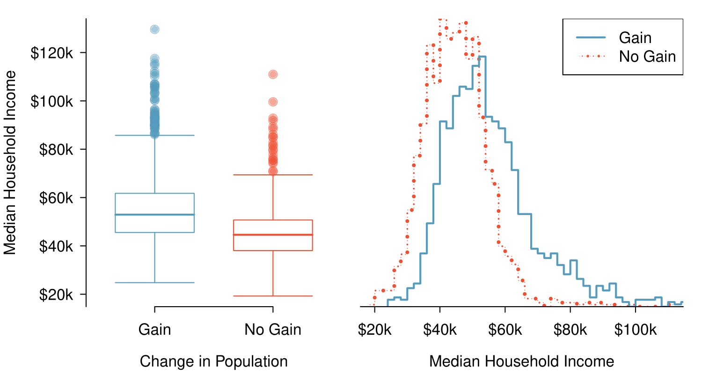
Figure2.2.40.Side-by-side box plot (left panel) and hollow histograms (right panel) for med_hh_income, where the counties are split by whether or not there was a population gain from 2010 to 2017. Explore this data set on https://public.tableau.com/profile/openintro#!/vizhome/Chapter2_23/Fig2_22altTableau Public.
Another useful plotting method uses hollow histograms to compare numerical data across groups. These are just the outlines of histograms of each group put on the same plot, as shown in the right panel of Figure 2.2.40.
Checkpoint2.2.41.
Use the plots in Figure 2.2.40 to compare the incomes for counties across the two groups. What do you notice about the approximate center of each group? What do you notice about the variability between groups? Is the shape relatively consistent between groups? How many prominent modes are there for each group? 21
Answers may vary a little. The counties with population gains tend to have higher income (median of about $45,000) versus counties without a gain (median of about $40,000). The variability is also slightly larger for the population gain group. This is evident in the IQR, which is about 50% bigger in the gain group. Both distributions show slight to moderate right skew and are unimodal. The box plots indicate there are many observations far above the median in each group, though we should anticipate that many observations will fall beyond the whiskers when examining any data set that contain more than a couple hundred data points.
Comparing distributions.
When comparing distributions, compare them with respect to center, spread, and shape as well as any unusual observations. Such descriptions should be in context.
Checkpoint2.2.42.
What components of each plot in Figure 2.2.40 do you find most useful? 22
Answers will vary. The parallel box plots are especially useful for comparing centers and spreads, while the hollow histograms are more useful for seeing distribution shape, skew, and groups of anomalies.
Checkpoint2.2.43.
Do these graphs tell us about any association between income for the two groups? 23
No, to see association we require a scatterplot. Moreover, these data are not paired, so the discussion of association does not make sense here.
Looking at an association is different than comparing distributions. When comparing distributions, we are interested in questions such as, “Which distribution has a greater average?” and “How do the shapes of the distribution differ?” The number of elements in each data set need not be the same (e.g. height of women and height of men). When we look at association, we are interested in whether there is a positive, negative, or no association between the variables. This requires two data sets of equal length that are essentially paired (e.g. height and weight of individuals).
Comparing distributions versus looking at association.
We compare two distributions with respect to center, spread, and shape. To compare the distributions visually, we use 2 single-variable graphs, such as two histograms, two dot plots, parallel box plots, or a back-to-back stem-and-leaf. When looking at association, we look for a positive, negative, or no relationship between the variables. To see association visually, we require a scatterplot.
Subsection2.2.10Mapping data (special topic)
The county data set offers many numerical variables that we could plot using dot plots, scatterplots, or box plots, but these miss the true nature of the data. Rather, when we encounter geographic data, we should create an intensity map, where colors are used to show higher and lower values of a variable. Figure 2.2.46 and Figure 2.2.47 shows intensity maps for poverty rate in percent (poverty), unemployment rate (unemployment_rate), homeownership rate in percent (homeownership), and median household income (median_hh_income). The color key indicates which colors correspond to which values. The intensity maps are not generally very helpful for getting precise values in any given county, but they are very helpful for seeing geographic trends and generating interesting research questions or hypotheses.
Example2.2.44.
What interesting features are evident in the poverty and unemployment_rate intensity maps?
Solution.
Poverty rates are evidently higher in a few locations. Notably, the deep south shows higher poverty rates, as does much of Arizona and New Mexico. High poverty rates are evident in the Mississippi flood plains a little north of New Orleans and also in a large section of Kentucky.
The unemployment rate follows similar trends, and we can see correspondence between the two variables. In fact, it makes sense for higher rates of unemployment to be closely related to poverty rates. One observation that stand out when comparing the two maps: the poverty rate is much higher than the unemployment rate, meaning while many people may be working, they are not making enough to break out of poverty.
Checkpoint2.2.45.
What interesting features are evident in the median_hh_income intensity map in Figure 2.2.(b)? 24
Note: answers will vary. There is some correspondence between high earning and metropolitan areas, where we can see darker spots (higher median household income), though there are several exceptions. You might look for large cities you are familiar with and try to spot them on the map as dark spots.
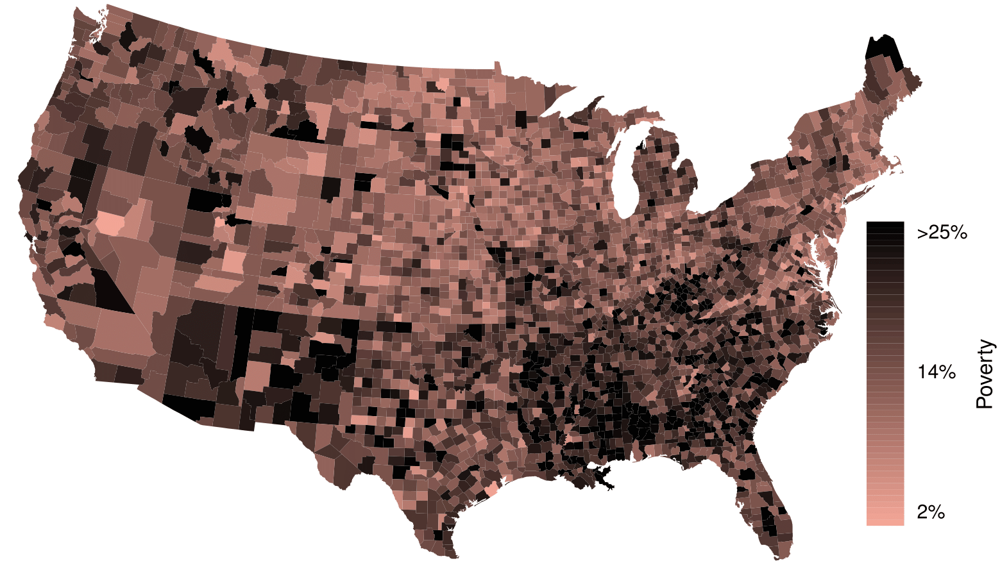(a)
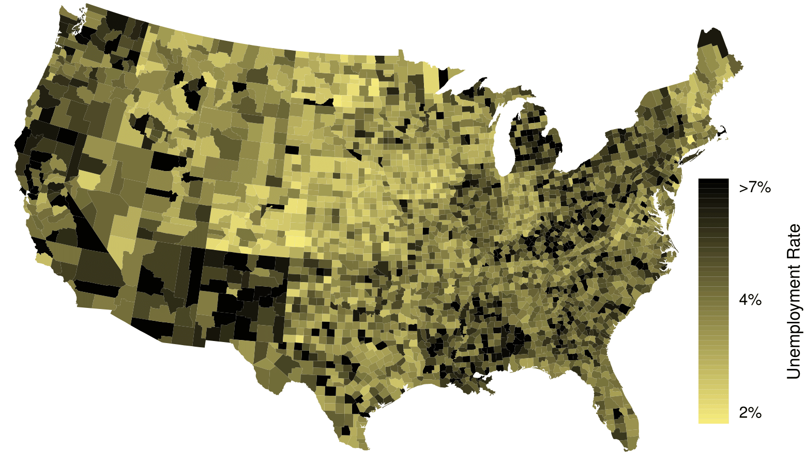(b)
Figure2.2.46.(a) Intensity map of poverty rate (percent). (b) Intensity map of the unemployment rate (percent). Explore dozens of intensity maps using American Community Survey data on Tableau Public 25
Figure2.2.47.(a) Intensity map of homeownership rate (percent). (b) Intensity map of median household income ($1000s). Explore dozens of intensity maps using American Community Survey data on Tableau Public 26
In this section we looked at univariate summaries, including two measures of center and three measures of spread.
When summarizing or comparing distributions, always comment on center, spread, and shape. Also, mention outliers or gaps if applicable. Put descriptions in context, that is, identify the variable(s) being summarized by name and include relevant units. Remember: Center, Spread, and Shape! In context!
Mean and median are measures of center. (A common mistake is to report mode as a measure of center. However, a mode can appear anywhere in a distribution.)
The mean is the sum of all the observations divided by the number of observations, \(n\text{.}\)\(\bar{x} = \frac{1}{n}\sum{x_{i}} = \frac{\sum{x_i}}{n}=\frac{x_1 + x_2 + ... + x_n}{n}\)
In an ordered data set, the median is the middle number when \(n\) is odd. When \(n\) is even, the median is the average of the two middle numbers.
Because large values exert more “pull” on the mean, large values on the high end tend to increase the mean more than they increase the median. In a right skewed distribution, therefore, the mean is greater than the median. Analogously, in a left skewed distribution, the mean is less than the median. Remember: The mean follows the tail! The skew is the tail!
Standard deviation (SD) and Interquartile range (IQR) are measures of spread. SD measures the typical spread from the mean, whereas IQR measures the spread of the middle 50% of the data.
To calculate the standard deviation, subtract the average from each value, square all those differences, add them up, divide by \(n -1\text{,}\) then take the square root. Note: The standard deviation is the square root of the variance.
The IQR is the difference between the third quartile \(Q_3\) and the first quartile \(Q_1\text{.}\)
\(\displaystyle IQR = Q_3 - Q_1\)
Range is also sometimes used as a measure of spread. The range of a data set is defined as the difference between the maximum value and the minimum value, i.e. \(max - min\text{.}\)
Outliers are observations that are extreme relative to the rest of the data. Two rules of thumb for identifying observations as outliers are:
more than 2 standard deviations above or below the mean
more than \(1.5 \times IQR\) below \(Q_1\) or above \(Q_3\)
Note: These rules of thumb generally produce different cutoffs.
Mean and SD are sensitive to outliers. Median and IQR are more robust and less sensitive to outliers.
The empirical rule states that for normal distributions, about 68% of the data will be within one standard deviation of the mean, about 95% will be within two standard deviations of the mean, and about 99.7% will be within three standard deviations of the mean.
Linear transformations of data. Adding a constant to every value in a data set shifts the mean but does not affect the standard deviation. Multiplying the values in a data set by a constant will multiply the mean and the standard deviation by that constant, except that the standard deviation must always remain positive.
Box plots do not show the distribution of a data set in the way that histograms do. Rather, they provide a visual depiction of the 5-number summary, which consists of: \(min\text{,}\)\(Q_1\text{,}\)\(Q_2\text{,}\)\(Q_3\text{,}\)\(max\text{.}\) It is important to be able to identify the median, \(IQR\text{,}\) and direction of skew from a box plot.
Exercises2.2.12Exercises
1.Smoking habits of UK residents, Part I.
A survey was conducted to study the smoking habits of UK residents. The histograms below display the distributions of the number of cigarettes smoked on weekdays and weekends, and they exclude data from people who identified themselves as non-smokers. Describe the two distributions and compare them. 27
Both distributions are right skewed and bimodal with modes at 10 and 20 cigarettes; note that people may be rounding their answers to half a pack or a whole pack. The median of each distribution is between 10 and 15 cigarettes. The middle 50% of the data (the IQR) appears to be spread equally in each group and have a width of about 10 to 15. There are potential outliers above 40 cigarettes per day. It appears that respondents who smoke only a few cigarettes (0 to 5) smoke more on the weekdays than on weekends.
2.Stats scores, Part I.
Below are the final exam scores of twenty introductory statistics students.
79
83
57
82
94
83
72
74
73
71
66
89
78
81
88
69
77
79
Draw a histogram of these data and describe the distribution.
3.Smoking habits of UK residents, Part II.
A random sample of 5 smokers from the data set discussed in Exercise 2.2.12.1 is provided below.
gender
age
maritalStatus
grossIncome
smoke
amtWeekends
amtWeekdays
Female
51
Married
£2,600 to £5,200
Yes
20 cig/day
20 cig/day
Male
24
Single
£10,400 to £15,600
Yes
20 cig/day
15 cig/day
Female
33
Married
£10,400 to £15,600
Yes
20 cig/day
10 cig/day
Female
17
Single
£5,200 to £10,400
Yes
20 cig/day
15 cig/day
Female
76
Widowed
£5,200 to £10,400
Yes
20 cig/day
20 cig/day
Find the mean amount of cigarettes smoked on weekdays and weekends by these 5 respondents.
Find the standard deviation of the amount of cigarettes smoked on weekdays and on weekends by these 5 respondents. Is the variability higher on weekends or on weekdays?
\(s_{amtWeekends} = 0\text{,}\)\(s_{amtWeekdays} = 4.18\text{.}\) In this very small sample, higher on weekdays.
4.Factory defective rate.
A factory quality control manager decides to investigate the percentage of defective items produced each day. Within a given work week (Monday through Friday) the percentage of defective items produced was 2%, 1.4%, 4%, 3%, 2.2%.
Calculate the mean for these data.
Calculate the standard deviation for these data, showing each step in detail.
5.Days off at a mining plant.
Workers at a particular mining site receive an average of 35 days paid vacation, which is lower than the national average. The manager of this plant is under pressure from a local union to increase the amount of paid time off. However, he does not want to give more days off to the workers because that would be costly. Instead he decides he should fire 10 employees in such a way as to raise the average number of days off that are reported by his employees. In order to achieve this goal, should he fire employees who have the most number of days off, least number of days off, or those who have about the average number of days off?
Solution.
Any 10 employees whose average number of days off is between the minimum and the mean number of days off for the entire workforce at this plant.
6.Medians and IQRs.
For each part, compare distributions (1) and (2) based on their medians and IQRs. You do not need to calculate these statistics; simply state how the medians and IQRs compare. Make sure to explain your reasoning.
3, 5, 6, 7, 9
3, 5, 6, 7, 20
3, 5, 6, 7, 9
3, 5, 7, 8, 9
1, 2, 3, 4, 5
1, 2, 3, 4, 5
0, 10, 50, 60, 100
0, 100, 500, 600, 1000
7.Means and SDs.
For each part, compare distributions (1) and (2) based on their means and standard deviations. You do not need to calculate these statistics; simply state how the means and the standard deviations compare. Make sure to explain your reasoning. Hint: It may be useful to sketch dot plots of the distributions.
3, 5, 5, 5, 8, 11, 11, 11, 13
3, 5, 5, 5, 8, 11, 11, 11, 20
-20, 0, 0, 0, 15, 25, 30, 30
-40, 0, 0, 0, 15, 25, 30, 30
0, 2, 4, 6, 8, 10
20, 22, 24, 26, 28, 30
100, 200, 300, 400, 500
0, 50, 300, 550, 600
Solution.
Dist 2 has a higher mean since 20 > 13, and a higher standard deviation since 20 is further from the rest of the data than 13.
Dist 1 has a higher mean since \(-20 > -40\text{,}\) and Dist 2 has a higher standard deviation since -40 is farther away from the rest of the data than -20.
Dist 2 has a higher mean since all values in this distribution are higher than those in Dist 1, but both distribution have the same standard deviation since they are equally variable around their respective means.
Both distributions have the same mean since they’re both centered at 300, but Dist 2 has a higher standard deviation since the observations are farther from the mean than in Dist 1.
8.Mix-and-match.
Describe the distribution in the histograms below and match them to the box plots.
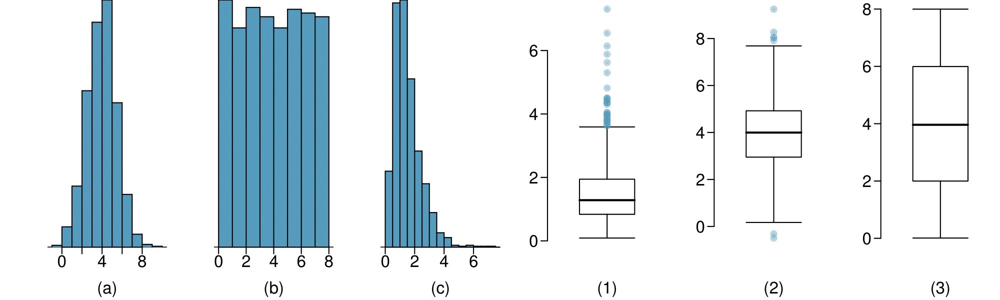
9.Air quality.
Daily air quality is measured by the air quality index (AQI) reported by the Environmental Protection Agency. This index reports the pollution level and what associated health effects might be a concern. The index is calculated for five major air pollutants regulated by the Clean Air Act and takes values from 0 to 300, where a higher value indicates lower air quality. AQI was reported for a sample of 91 days in 2011 in Durham, NC. The relative frequency histogram below shows the distribution of the AQI values on these days. 28
Would you expect the mean AQI value of this sample to be higher or lower than the median? Explain your reasoning.
Estimate Q1, Q3, and IQR for the distribution.
Would any of the days in this sample be considered to have an unusually low or high AQI? Explain your reasoning.
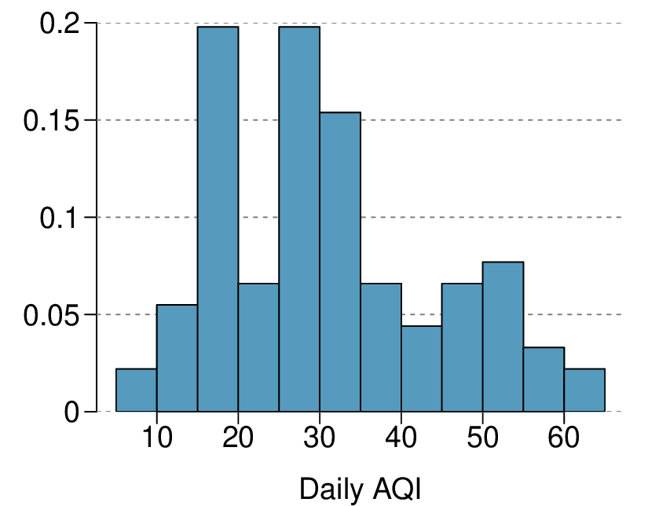
Solution.
About 30.
Since the distribution is right skewed the mean is higher than the median.
Q1: between 15 and 20, Q3: between 35 and 40, IQR: about 20.
Values that are considered to be unusually low or high lie more than \(1.5 \times \text{IQR}\) away from the quartiles. Upper fence: \(Q3 + 1.5 \times \text{IQR} = 37.5 + 1.5 \times 20 = 67.5\text{;}\) Lower fence: \(Q1 - 1.5 \times \text{IQR} = 17.5+ 1.5 \times 20 = -12.5\text{;}\) The lowest AQI recorded is not lower than 5 and the highest AQI recorded is not higher than 65, which are both within the fences. Therefore none of the days in this sample would be considered to have an unusually low or high AQI.
10.Median vs. mean.
Estimate the median for the 400 observations shown in the histogram, and note whether you expect the mean to be higher or lower than the median.
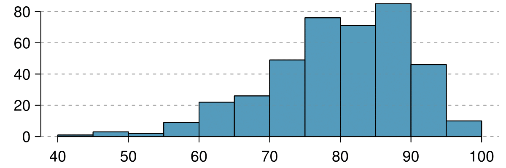
11.Histograms vs. box plots.
Compare the two plots below. What characteristics of the distribution are apparent in the histogram and not in the box plot? What characteristics are apparent in the box plot but not in the histogram?
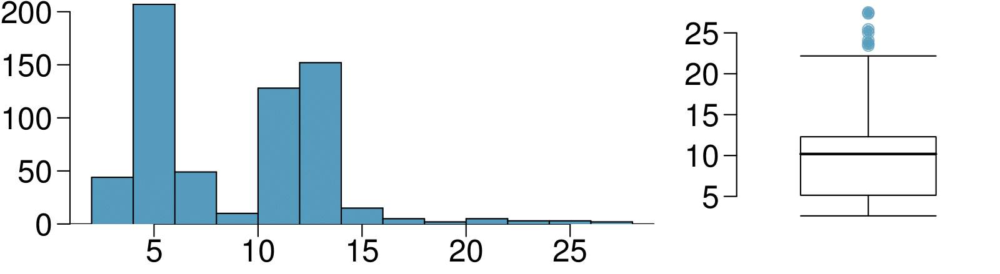
Solution.
The histogram shows that the distribution is bimodal, which is not apparent in the box plot. The box plot makes it easy to identify more precise values of observations outside of the whiskers.
12.Facebook friends.
Facebook data indicate that 50% of Facebook users have 100 or more friends, and that the average friend count of users is 190. What do these findings suggest about the shape of the distribution of number of friends of Facebook users? 29
13.Distributions and appropriate statistics, Part I.
For each of the following, state whether you expect the distribution to be symmetric, right skewed, or left skewed. Also specify whether the mean or median would best represent a typical observation in the data, and whether the variability of observations would be best represented using the standard deviation or IQR. Explain your reasoning.
Number of pets per household.
Distance to work, i.e. number of miles between work and home.
Heights of adult males.
Solution.
The distribution of number of pets per household is likely right skewed as there is a natural boundary at 0 and only a few people have many pets. Therefore the center would be best described by the median, and variability would be best described by the IQR.
The distribution of number of distance to work is likely right skewed as there is a natural boundary at 0 and only a few people live a very long distance from work. Therefore the center would be best described by the median, and variability would be best described by the IQR.
The distribution of heights of males is likely symmetric. Therefore the center would be best described by the mean, and variability would be best described by the standard deviation.
14.Distributions and appropriate statistics, Part II.
For each of the following, state whether you expect the distribution to be symmetric, right skewed, or left skewed. Also specify whether the mean or median would best represent a typical observation in the data, and whether the variability of observations would be best represented using the standard deviation or IQR. Explain your reasoning.
Housing prices in a country where 25% of the houses cost below $350,000, 50% of the houses cost below $450,000, 75% of the houses cost below $1,000,000 and there are a meaningful number of houses that cost more than $6,000,000.
Housing prices in a country where 25% of the houses cost below $300,000, 50% of the houses cost below $600,000, 75% of the houses cost below $900,000 and very few houses that cost more than $1,200,000.
Number of alcoholic drinks consumed by college students in a given week. Assume that most of these students don’t drink since they are under 21 years old, and only a few drink excessively.
Annual salaries of the employees at a Fortune 500 company where only a few high level executives earn much higher salaries than all the other employees.
15.Income at the coffee shop.
The first histogram below shows the distribution of the yearly incomes of 40 patrons at a college coffee shop. Suppose two new people walk into the coffee shop: one making $225,000 and the other $250,000. The second histogram shows the new income distribution. Summary statistics are also provided.
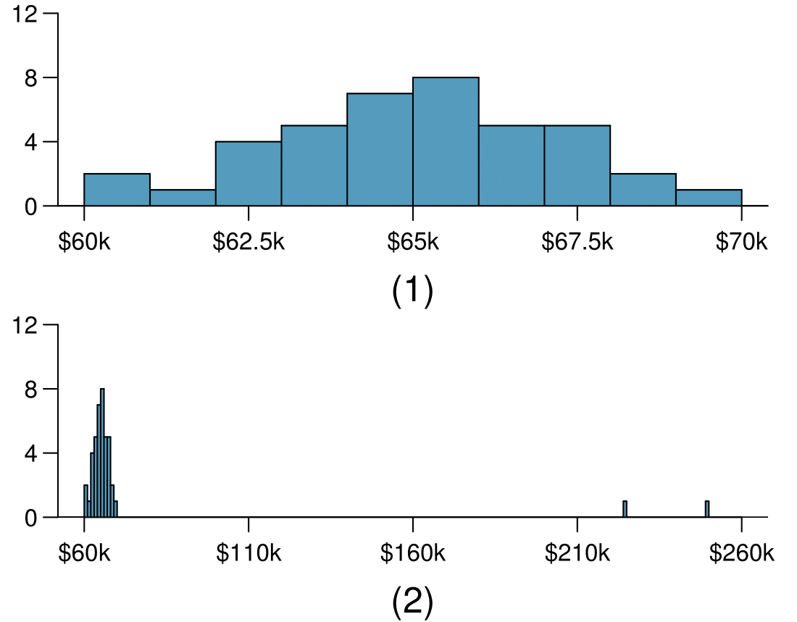
(1)
(2)
n
40
42
Min.
60,680
60,680
1st Qu.
63,620
63,710
Median
65,240
65,350
Mean
65,090
73,300
3rd Qu.
66,160
66,540
Max.
69,890
250,000
SD
2,122
37,321
Would the mean or the median best represent what we might think of as a typical income for the 42 patrons at this coffee shop? What does this say about the robustness of the two measures?
Would the standard deviation or the IQR best represent the amount of variability in the incomes of the 42 patrons at this coffee shop? What does this say about the robustness of the two measures?
Solution.
The median is a much better measure of the typical amount earned by these 42 people. The mean is much higher than the income of 40 of the 42 people. This is because the mean is an arithmetic average and gets affected by the two extreme observations. The median does not get effected as much since it is robust to outliers.
The IQR is a much better measure of variability in the amounts earned by nearly all of the 42 people. The standard deviation gets affected greatly by the two high salaries, but the IQR is robust to these extreme observations.
16.Midrange.
The midrange of a distribution is defined as the average of the maximum and the minimum of that distribution. Is this statistic robust to outliers and extreme skew? Explain your reasoning
17.Commute times.
The US census collects data on time it takes Americans to commute to work, among many other variables. The histogram below shows the distribution of average commute times in 3,142 US counties in 2010. Also shown below is a spatial intensity map of the same data.
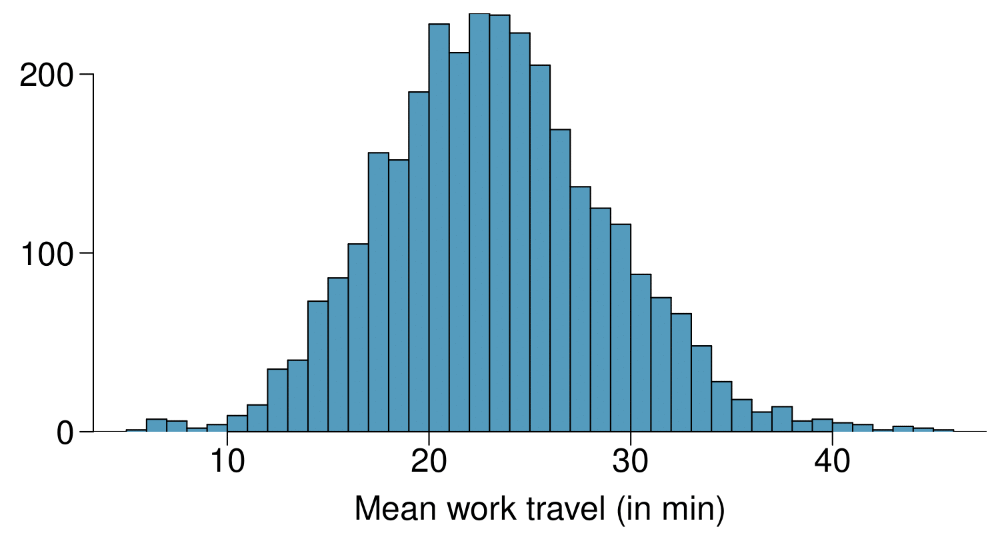
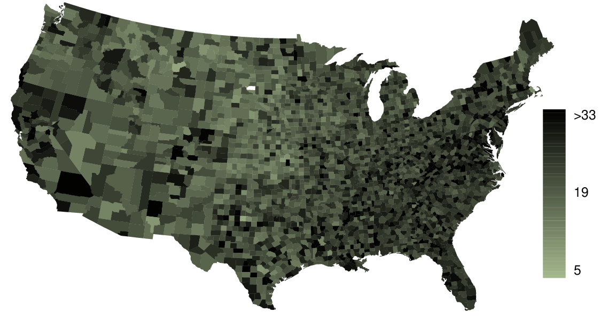
Describe the numerical distribution for commute times.
Describe the spatial distribution of commuting times using the map provided.
Solution.
The distribution is unimodal and symmetric with a mean of about 25 minutes and a standard deviation of about 5 minutes. There does not appear to be any counties with unusually high or low mean travel times. Since the distribution is already unimodal and symmetric, a log transformation is not necessary.
Answers will vary. There are pockets of longer travel time around DC, Southeastern NY, Chicago, Minneapolis, Los Angeles, and many other big cities. There is also a large section of shorter average commute times that overlap with farmland in the Midwest. Many farmers’ homes are adjacent to their farmland, so their commute would be brief, which may explain why the average commute time for these counties is relatively low.
18.Hispanic/Latine population.
The US census collects data on race and ethnicity of Americans, among many other variables. The histogram below shows the distribution of the percentage of the population that is Hispanic/Latine in 3,142 counties in the US in 2017. Also shown is a histogram of logs of these values.
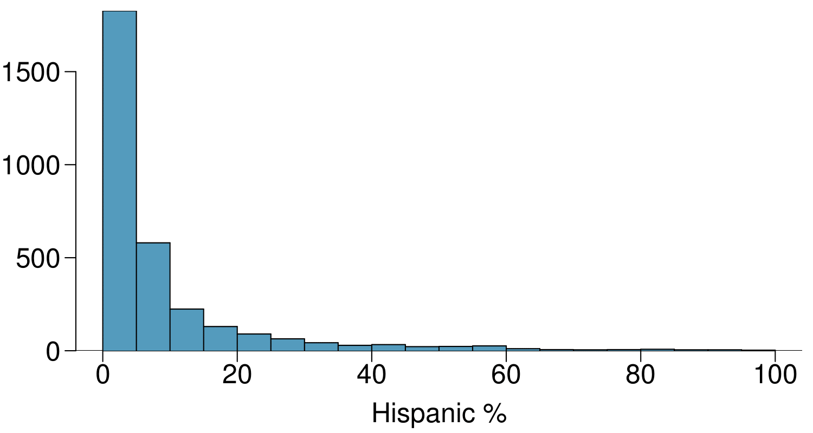
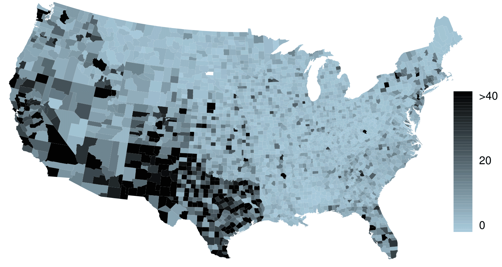
Describe the distribution of percent of population that is Hispanic/Latine for counties in the US.
What features of the distribution of the Hispanic/Latine population in US counties are apparent in the map but not in the histogram? What features are apparent in the histogram but not the map?
Is one visualization more appropriate or helpful than the other? Explain your reasoning.